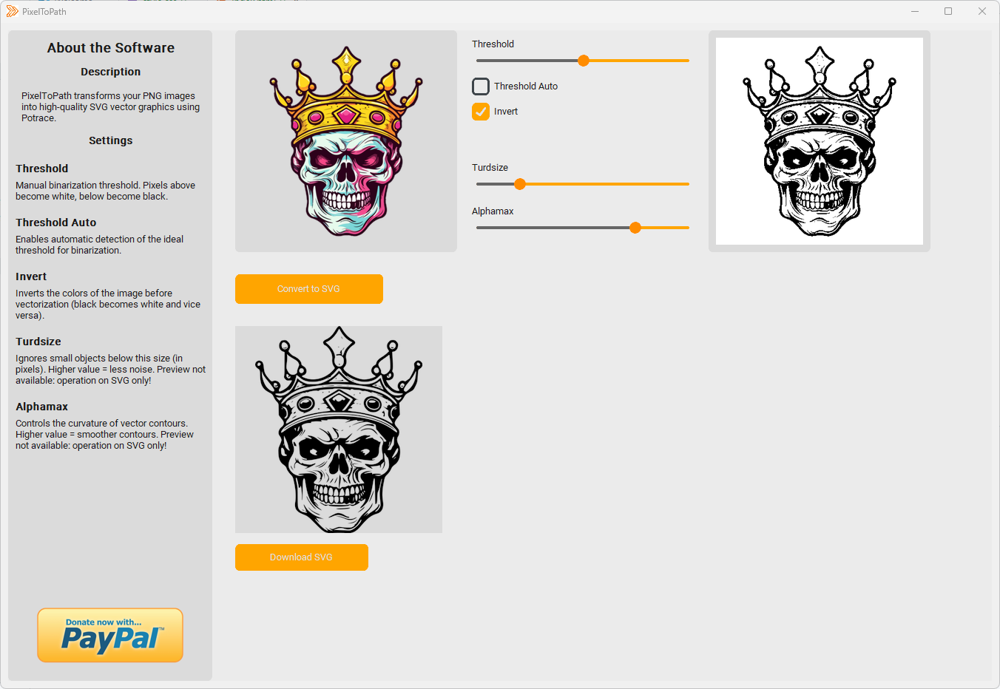

🔒 100% Приватно и Офлайн
Большинство онлайн-сервисов загружают ваши файлы на удаленный сервер. PixelToPath работает локально. Ваши макеты, логотипы и фото никогда не покидают компьютер.
PixelToPath — это бесплатный десктопный инструмент с открытым исходным кодом, который превращает ваши растровые изображения в чистую масштабируемую векторную графику. Без загрузки в облако, без очередей и без подписок.
На базе технологии Potrace • 100% Open Source • Офлайн приватность
Большинство онлайн-сервисов загружают ваши файлы на удаленный сервер. PixelToPath работает локально. Ваши макеты, логотипы и фото никогда не покидают компьютер.
Не нужно ждать загрузки или очереди на обработку. Легкий код PixelToPath конвертирует изображения за миллисекунды, используя мощный алгоритм Potrace.
Никаких лимитов вроде «3 бесплатных файла в день». Конвертируйте столько PNG, сколько нужно. Идеально для массовой подготовки графики для веба или дизайна.
Векторизация необходима дизайнерам для масштабирования логотипов без потери качества. Инструкция по PixelToPath:
Результат полностью совместим с Adobe Illustrator, Inkscape, Figma и веб-браузерами.
Присоединяйтесь к тысячам пользователей, которые выбрали простоту.
Также доступно на: SourceForge | GitHub Releases
PixelToPath бесплатен. Если этот инструмент сэкономил ваше время, вы можете поддержать автора, угостив его кофе.
❤️ Поддержать через PayPal